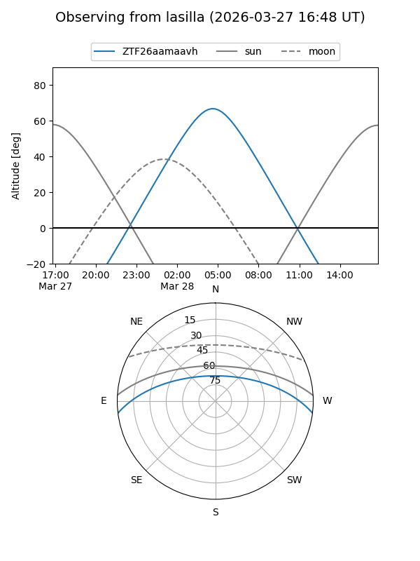
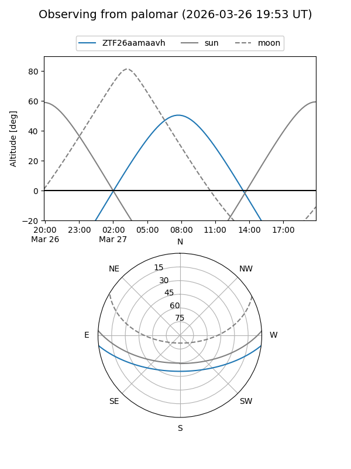

ZTF26aamaavh
Target ZTF26aamaavh at 2026-03-27 09:43
Aliases and brokers:
FINK: link
Lasair: link
ALeRCE: link
alt names
ZTF26aamaavh (ztf,fink_ztf)
Coordinates:
equatorial (ra, dec) = 183.8016,-5.94857
equatorial (HMS+DMS) = 12:15:12.39,-05:56:54.84
galactic (l, b) = (286.7644,+55.78171)
Flags:
Photometry:
last ztfg=16.68
1 ztfg detections
Lightcurve
Visibility


Additional plots